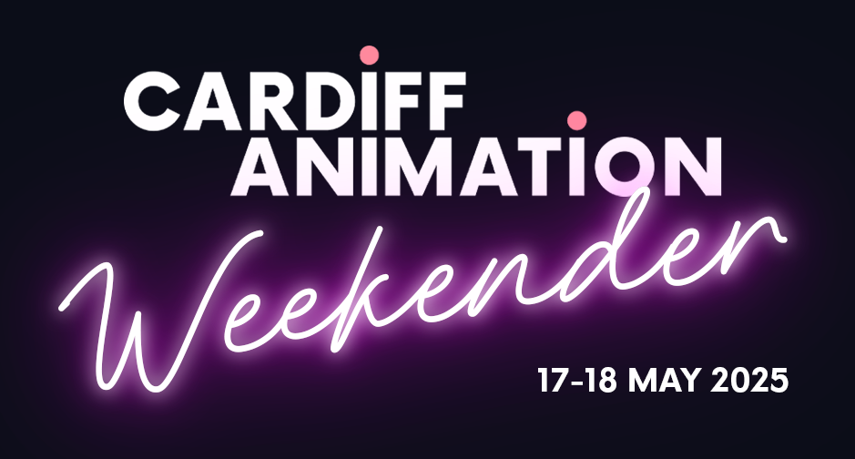
I made an ident for the Cardiff Animation Weekender that was shown before The Wrong Trousers.
The theme was nostalgia, and I decided to go in the direction of old British stop motion I'd watch on DVD: Camberwick Green, Portland Bill, but most notably Bertha by Ivor Wood.

The ident on Youtube.

The set and handcar from the ident.
Music
Demo 1
Demo 2
Demo 3
Final
Concept and Story

Handcar ending concept.
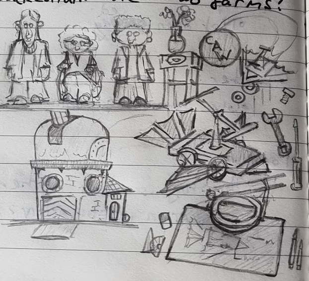
Various ideas for the ident.
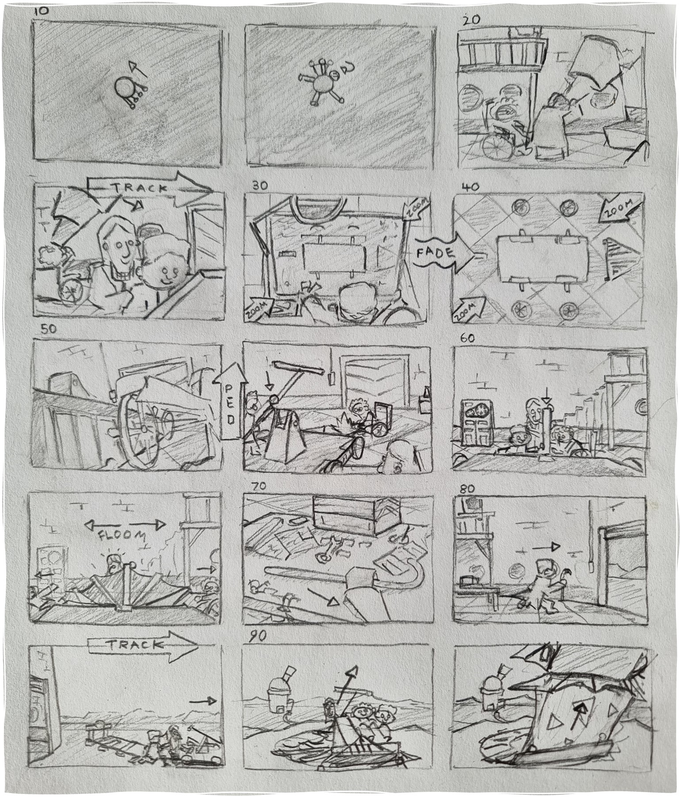
Storyboard part 1.
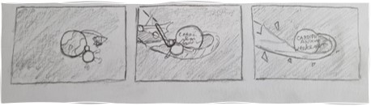
Storyboard part 2.
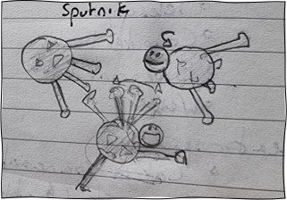
Concept for Dotty looking like Sputnik.
Building the Set
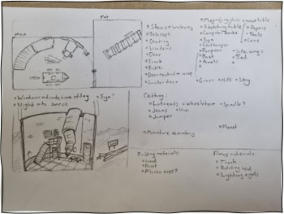
Plan for the set and list of materials needed.
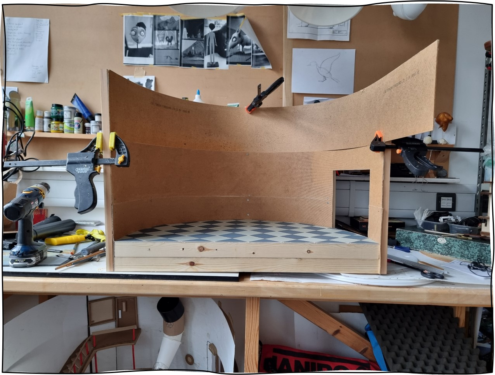
I curved MDF to to make the round wall of the set.
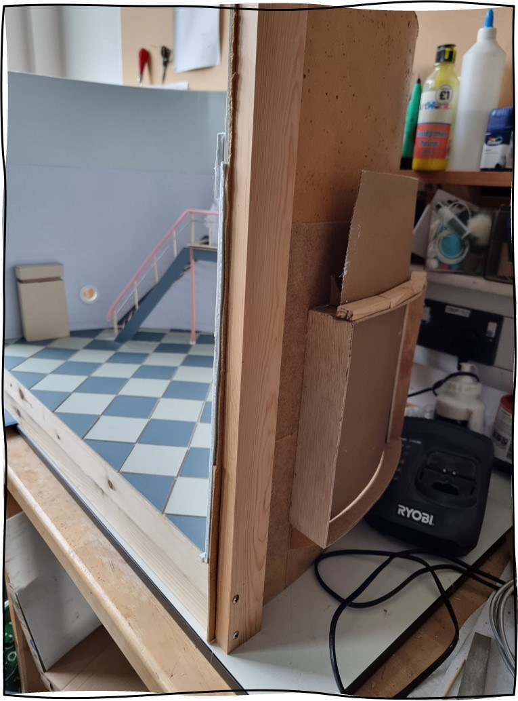
The garage door was a sheet of corrugated cardboard held in a slit.
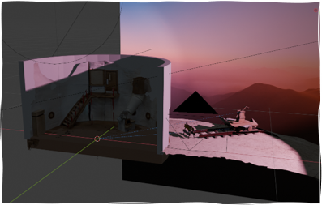
Lighting test in Blender for previs.
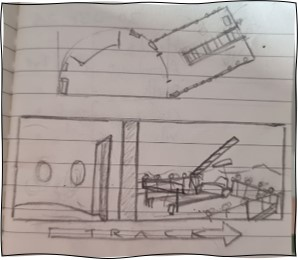
A concept for an exterior balcony that I didn't end up using.
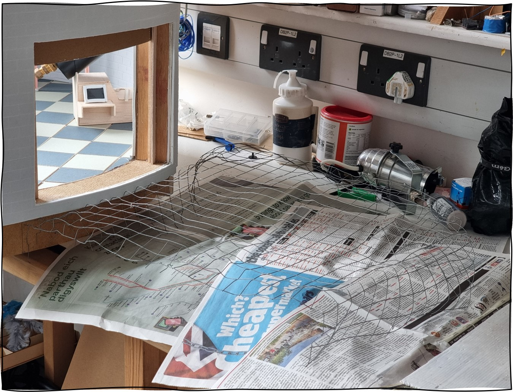
Chickenwire ground to be covered in Papier-mâché.
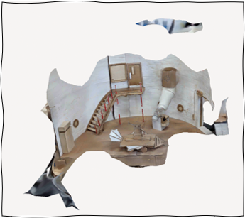
I scanned the set using a photogrammetry app to help with previs.
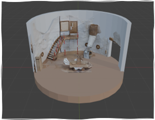
The reconstructed set in Blender.
The Puppets
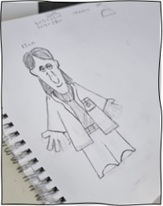
Life-size design for one of the characters.
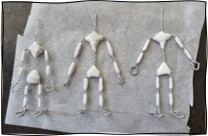
Three iterations of fimo-cored armatures. These puppets were tiny!
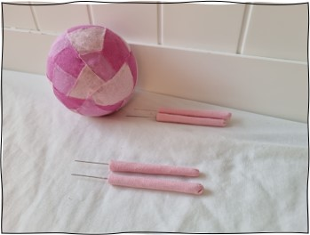
Dotty's limbs could be spiked into the foam core wherever I needed.
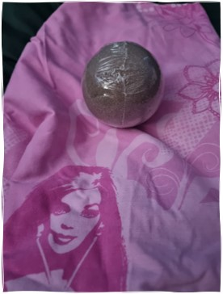
Bed sheet I used for the three colours needed.
The Shoot
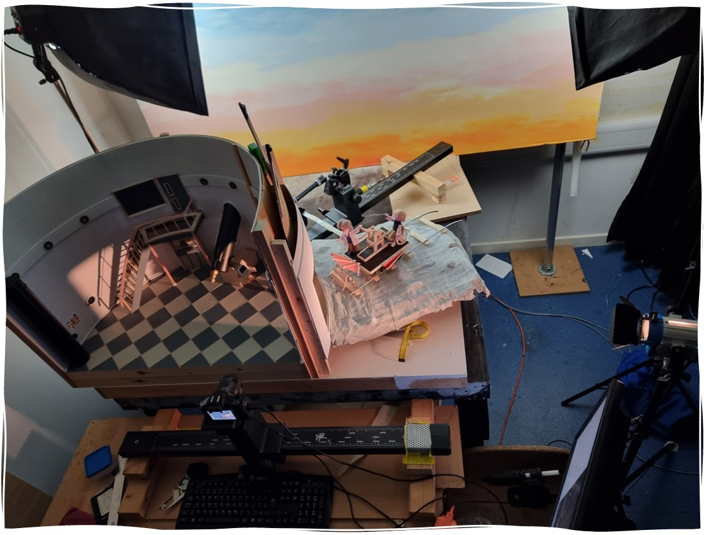
Layout for the complex tracking shot.
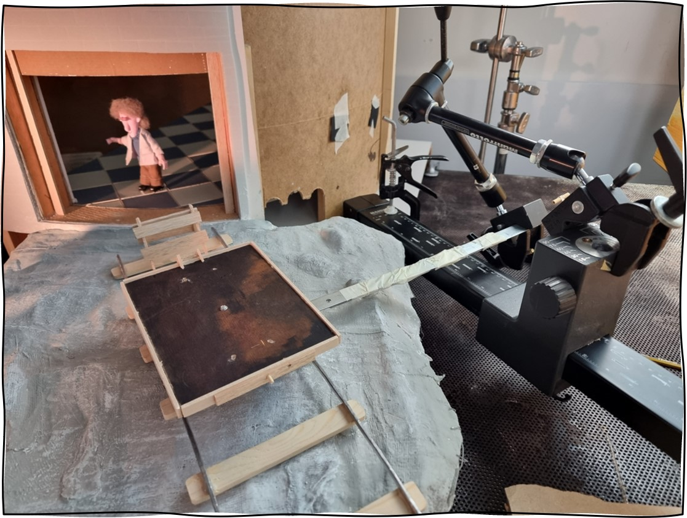
How the handcar was rigged, otherwise the dang thing kept falling off the track!
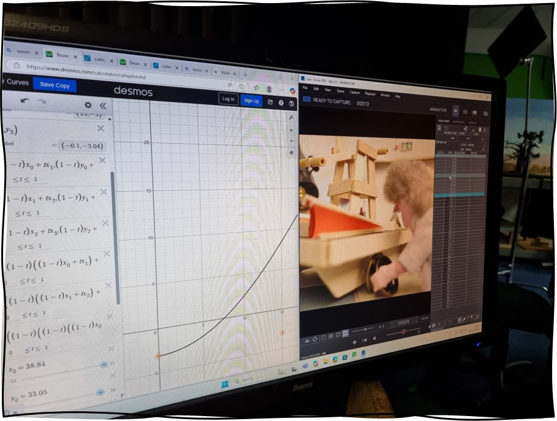
I used Desmos a couple times to work out how to ease my camera movements.
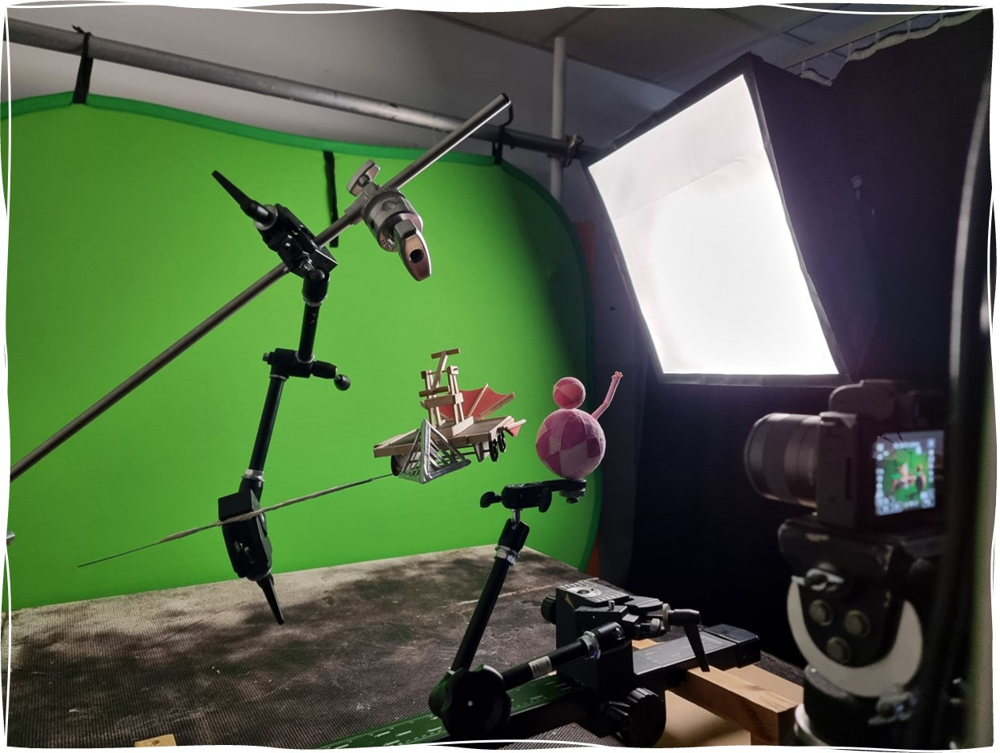
The handcar and characters were supported from a rotating stand for the final shot.
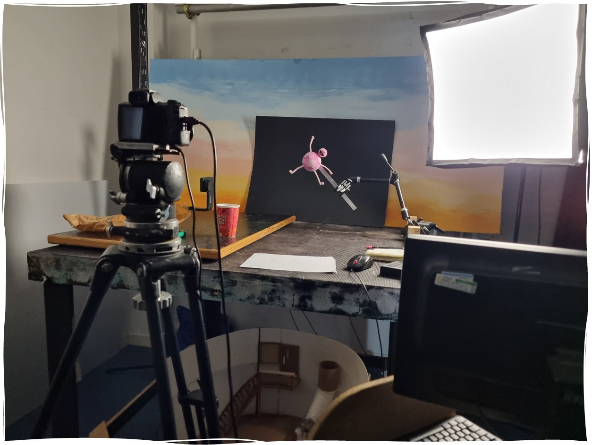
I shot Dotty foolishly on a black background thinking it would be easy to mask.
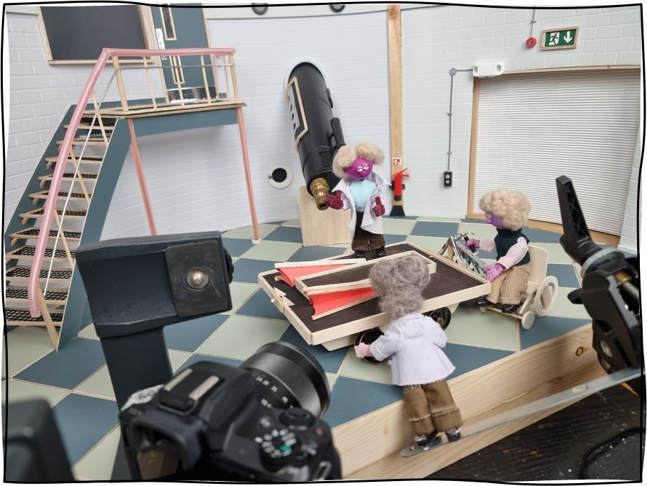
Setup for the pedestal shot.